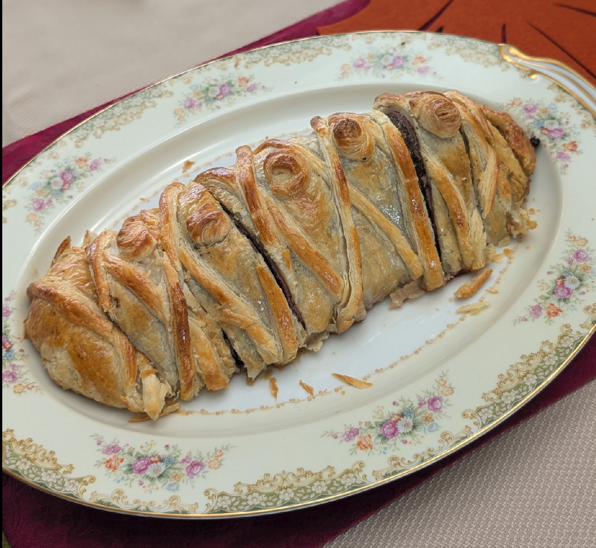

Beef Wellington

Ingredients
- 2-3 lbs filet of beef
- 3 tbs olive oil
- 500 g portobello or button mushrooms
- 3½ tbs butter
- 1 large sprig fresh thyme
- 3½ oz dry white wine
- 12 slices prosciutto
- 1 lb puff pastry, thawed
- 1 handful flour, to dust
- 2 egg yolks beaten with 1 tsp water
- Kosher salt and fresh cracked black pepper to taste
- Maldon's Sea Salt Flakes to finish the pastry
Directions
- Heat oven to 425° F
- Place the beef on a roasting tray, brush with 1 tbsp olive oil and season with pepper, then roast for 15 mins for medium-rare or 20 mins for medium.
- Remove from the oven to cool, then chill in the fridge for about 20 minutes.
- While the beef is cooling, blitz the mushrooms in a food processor so they have the texture of coarse breadcrumbs, making sure to pulse so the mushrooms don't turn into mush.
- Heat 2 tbsp of the oil and all the butter in a large pan and fry the mushrooms with the thyme sprig on medium heat for about 10 mins stirring often, until you have a softened mixture.
- Season the mushroom mixture, add the wine and cook until all the wine has been absorbed, about 10 minutes. The mixture should hold its shape when stirred. Remove the mushroom mixture from the pan to cool and discard the thyme.
- Overlap two pieces of plastic wrap over a large chopping board. Lay the prosciutto on the plastic wrap, slightly overlapping, in a double row.
- Spread half the mushroom mixture over the prosciutto, place the fillet on it, then spread the remaining mushroom mixture over it.
- Use the plastic wrap edges to draw the prosciutto around the fillet, then roll it into a sausage shape, twisting the ends of plastic wrap to tighten it as you go. Chill the fillet while you roll out the pastry.
- Roll out a third of the pastry to a 7 x 12 in strip and place on a parchment-lined baking sheet.
- Roll out the remaining pastry to about 11 x 14 in. Unravel the fillet from the plastic wrap and place it in the center of the smaller strip of pastry and brush the pastry's edges, and the top and sides of the wrapped fillet, with beaten egg yolk.
- Using a rolling pin, carefully lift and drape the larger piece of pastry over the fillet, pressing well into the sides. Trim the edges to about a 1.5in rim.
- Seal the rim with the edge of a fork or spoon handle. Glaze all over with more egg yolk and mark the Wellington with long diagonal lines using the back of a knife, taking care not to cut into the pastry. Chill for at least 30 mins and up to 24 hours.
- Brush the Wellington with a little more egg yolk, top with some flaky salt, and cook at 425° until golden and crisp - 20-25 mins for medium-rare beef, 30 mins for medium.
- Allow to stand for 10 mins before serving in thick slices.
Chef's Notes
Pro Tips:
- Brush the beef with a neutral oil, season generously, and sear in a hot cast iron skillet before baking. Use the pan drippings to prepare a mushroom sauce with butter, shallots, and wine, thickened with flour and enriched with beef stock.
- Remove the beef when the internal temperature reaches 135°F. Carryover will bring the internal temperature to 150-155°F on the counter, which is perfect for us
- Portobello or button mushrooms are my usual choice, but feel free to use any fresh variety. A mix of wild mushrooms can add extra depth of flavor.
- I use Colman's mustard instead of Dijon on the seared tenderloin as it cools down and before the duxelles
- Xiaoxing cooking wine can be substituted for dry white wine if needed
- Finish the Wellington with a beaten egg yolk and a sprinkle of flaky salt for a beautiful, flavorful crust.
- Line the pan with parchment paper to prevent the pastry from sticking. This step is essential for a clean release
- Trader Joe offers an excellent puff pastry. If you use this brand, note that the 1.2 lb box (sufficient for this recipe) contains two sheets. Use one for the bottom and the other for the top, sealing them with egg wash and the tines of a fork
- I typically serve garlic mashed potatoes as a side. The mushroom pan sauce pairs beautifully with garlic mashed potatoes. For vegetables, haricots verts or creamed spinach are excellent choices.
- If Prosciutto is unavailable, thin-sliced bacon works well; plan on about 12 slices
- Phyllo dough can be used in place of puff pastry. I have had success layering 12 sheets with melted butter and finishing with an egg wash. It works reasonably well, though the golden top often separates when portioned
- This recipe omits foie gras, a personal favorite, though I realize it's not for everyone
Michael Fritsche
mbf@fritsche.org